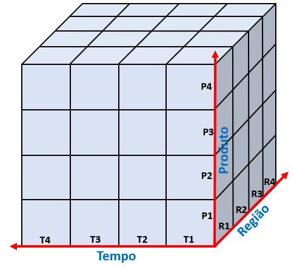
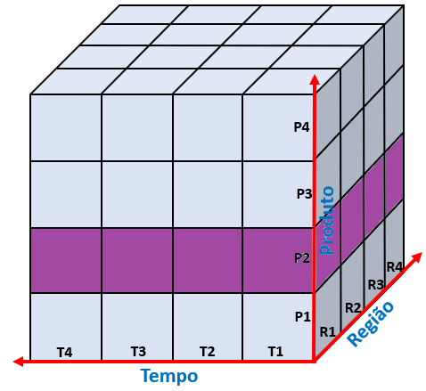
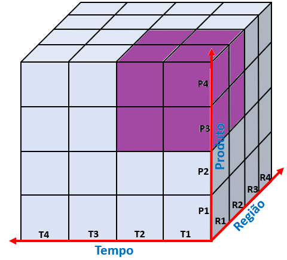
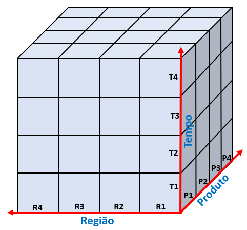

Conceitos de OLAP
Itens do Edital:
c) Análise de dados e informações: Conceitos de OLAP
Canaltech
O OLAP, do inglês “On-line Analytical Processing”, trata da capacidade de analisar grandes volumes de informações nas mais diversas perspectivas dentro de um Data Warehouse (DW). O OLAP também faz referência às ferramentas analíticas utilizadas no BI para a visualização das informações gerenciais e dá suporte para as funções de análises do negócio organizacional.
Os sistemas OLTP e OLAP se diferenciam em diversos outros aspectos. Vejamos:

Em resumo podemos dizer que a grande diferença está no fato de que um está direcionado ao funcionamento dentro do ambiente operacional (OLTP) e o outro com foco essencialmente gerencial (OLAP).

Brasil Escola
5.2. OLAP
Segundo Michel (2003), OLAP (On-Line Analytical Processing ou Processamento Analítico On-Line) é um sistema de informação multidimensional cuja tecnologia de construção permite aos analistas de negócios, gerentes e executivos analisar e visualizar dados corporativos de forma rápida, consistente e principalmente interativa, ou seja, é onde são extraídos e gerados os relatórios para os usuários. Na figura 8, mostra que o OLAP fornece informações aos usuários.
Figura 8: OLAP
Da mesma forma como o BI, O OLAP não pode ser definido, como uma ferramenta ou um processo, mas sim um conjunto dos mesmos, pois os elementos essenciais para a criação de um OLAP é sua aplicabilidade em diversas camadas da tecnologia, como armazenamento e linguagem de programação, THOMSEN, 2002, complementa dizendo que “[...]De modo geral, pode-se falar de conceitos OLAP, linguagens OLAP, camadas de produtos OLAP e produtos de OLAP completos[...]”.
O OLAP se difere do ETL, basicamente, pelo fato de ETL fazer a extração de dados diretamente de vários bancos, visando a sua organização e as soluções OLAP, extraem informações que foram geradas pelo ETL, se referindo a um conjunto de ferramentas voltadas para o acesso e análise ad-hoc de dados.
BILL INMON, 2002 conceitua ad-hoc como:
Consultas com acesso casual único e tratamento dos dados segundo parâmetros nunca antes utilizados, geralmente executados de forma iterativa e heurística. Isso tudo nada mais é do que o próprio usuário gerar consultas de acordo com suas necessidades de cruzar as informações de uma forma não vista e com métodos que o levem a descoberta daquilo que procura.”
Em BI, o OLAP pode se apresentar principalmente de duas formas, como MOLAP, que é mais indicado para Data Marts e ROLAP que é mais indicado para Data Warehouse. Nos Data Marts o método de armazenamento de dados OLAP é chamado de MOLAP, que usa a tecnologia MDDB (MultiDimensional Database), isto se deve pelo fato de que os DM são mais específicos e a análise será mais limitada e com pouco detalhamento. Nos DW, o método é o ROLAP, que utiliza a tecnologia (Relational DataBase Management System), que possibilita um uso maior de funções e uma análise com mais confiabilidade na grande gama de informações que o DW possui.
Para “navegar” nas dimensões do “cubo” OLAP, emprega-se o uso de operadores dimensionais, que tem papeis distintos, podendo ser para aumentar e diminuir a granulidade, que é o nível de detalhamento a ser visualizado, ou então para ordenar e classificar as informações, na seção 4.2.1 algumas operações são demonstradas.
5.3. Operações
Uma das características mais importantes das ferramentas OLAP é a possibilidade de realizar algumas operações no decorrer da implementação, que nos fornece total controle das informações a serem exibidas e ordenadas. Existem variados tipos de comandos, mas comumente no BI utiliza-se algumas principais e são elas: Drill Across, Drill Up, Drill Down e Drill-Through.
Figura 9: Operações

5.3.1. Drill Across
É um comando para pular de um nível intermediário dentro de uma dimensão para outra dimensão. É necessário a utilização de duas tabelas fatos e essas tabelas tem que compartilhar a mesma dimensão intermediária. Segundo Kimball (2002), “trata-se de uma operação sobre dois cubos. Os dados nos dois cubos são combinados nas dimensões comuns aos mesmos”. Além de “pular” entre as dimensões, também é possível compara-las, por exemplo, é possível traçar um comparativo entre duas dimensões, como o valor total de vendas, pelo numero de um determinado produto vendido, sendo necessário elas apenas compartilharem alguma dimensão. Barbieri, 2001 completa dizendo que “[...] embora correlacionadas, estão em estruturas separadas, porém unidas por algumas dimensões coerentes”.
5.3.2. Drill Up e Drill Down
O Drill-up é o aumento na hierarquia de uma dimensão, por exemplo, imagina uma dimensão “Tempo” onde estão organizadas as informações em dia, mês, semestre e ano, vamos supor que queiramos ir, do dia 10 para o mês de março, essas operações não vão de um cubo a outro, mas sim na mesma dimensão, aumentando assim a granularidade do DW e diminui o nível de detalhamento.
Já o Drill Down é o contrário de Drill UP, é a descida na hierarquia de uma dimensão, indo de um mês para um dia diminuindo a granularidade e aumentando o nível de detalhe.
5.3.3. Drill Through
Possui o funcionamento parecido com o Drill Down, porém, tem como característica a possibilidade buscar os dados, ou informações, fora da estrutura principal. Por exemplo, após alcançar o nível máximo de detalhe em uma tabela fato, tem necessidade de se obter mais detalhe sobre determinada célula, como a nota fiscal, por exemplo, com o Drill Through é possível acessar o arquivo de origem dessa informação, diminuindo a granularidade, aumentando o nível de detalhe e saindo da estrutura principal do DW ou de um Data Mart.
Estratégia Concursos
O que é OLAP e como ele é utilizado na Tecnologia da Informação
Conceito
O OLAP (On-Line Analytical Processing / Processamento Analítico On-line) é uma importante ferramenta utilizada para realizar análises em grandes quantidades de dados, geralmente armazenados em Data Warehouses, sendo comumente utilizado em modelos dimensionais.
Esta ferramenta é muito aplicada no ambiente empresarial, sendo que, através da sua utilização, é possível realizar o fornecimento de informações a respeito do comportamento dos negócios do usuário, podendo identificar tendências do mercado, condutas dos clientes, entre outras vantagens.
A análise multidimensional é a grande característica do OLAP. Mas o que isso quer dizer? Bom, este tipo de análise é baseado em cubos de informações, na qual é possível que sejam realizados estudos por meio de diferentes variáveis (dimensões), simultaneamente. Vamos ilustrar? Observe a figura abaixo:

As informações do banco de dados são distribuídas em dimensões (Tempo, Região e Produto), dentro de um cubo. Desse modo, por exemplo, através do OLAP, é possível analisar os dados das vendas de determinado produto P1, na região R3, durante o período de tempo T2.
Vamos dar nomes a essas variáveis, de modo a clarear o raciocínio. Suponha-se que determinada empresa, que iniciou suas operações em 2018 e está em operação atualmente, comercialize os seguintes produtos: caminhões, carros, motos e bicicletas, sendo que ela realiza vendas em diversas regiões do Brasil, como a região Sul, Norte, Nordeste e Sudeste. Assim, através da análise por meio do OLAP, é possível identificar quantos carros foram vendidos na região Nordeste no ano de 2019, de maneira fácil e rápida.
Mais adiante explicaremos os diversos tipos de operações que podem ser realizadas utilizando o cubo de dados.
OLAP x OLTP
OLTP
Os bancos de dados tradicionais também possuem suporte para o processamento de transações de um negócio, sendo que, para isto, é utilizada a ferramenta OLTP (On-Line Transaction Processing / Processamento de Transações On-Line).
O OLTP é focado em realizar transações rotineiras e cotidianas em tempo real, com muita agilidade, através de inserções, exclusões e atualizações de informações, sendo também possível realizar consultas dos dados armazenados.
Diferenças
Um ponto que precisa estar fixado na mente do estudante é que o OLTP é focado em transações cotidianas e rotineiras, sendo processado de maneira mais rápida do que o OLAP, enquanto que o OLAP é focado em análises, de maneira a subsidiar decisões gerenciais e estratégicas na empresa, não realizando alterações na base de dados, como o OLTP, apenas o carregamento e a consulta das informações.
Além disso, os dados a serem analisados pelo OLTP geralmente são estruturados em bancos de dados relacionais com características transacionais, sendo que o OLAP é focado em dados estruturados em modelos multidimensionais.
PARA FIXAR:
OLAP -> foco em análise; modelo multidimensional; carga e consulta de dados; mais lento.
OLTP -> foco em transações rotineiras; modelo relacional de uso transacional; inclusão e exclusão de dados, mais rápido.
Variações de OLAP
O OLAP pode ser dividido de acordo com a estrutura de armazenamento dos dados e de acordo com a origem da consulta de informações.
Estrutura de armazenamento
- MOLAP (Processamento Analítico Multidimensional On-Line)
Nesta estrutura, são realizadas consultas multidimensionais diretamente em dados armazenados em bancos também multidimensionais, possuindo um alto desempenho. Além disso, o MOLAP possui como característica a limitação da quantidade de informações que pode ser analisada simultaneamente (baixa escalabilidade).
- ROLAP (Processamento Analítico Relacional On-line)
Já no ROLAP, os dados utilizados para as operações multidimensionais estão armazenados em bases de dados relacionais, através de tabelas formadas por linhas e colunas, possuindo um baixo desempenho de consulta. De maneira contrária ao MOLAP, não há restrições quanto à quantidade de dados a ser analisada, possuindo, assim, uma alta escalabilidade.
- HOLAP (Processamento Analítico On-Line Híbrido)
Esse é o modelo híbrido de OLAP, ou seja, ele é uma combinação dos modelos MOLAP e ROLAP, possuindo, simultaneamente, um bom desempenho em consultas, bem como uma boa escalabilidade.
Origem da consulta
- DOLAP (Desktop On-Line Analytical Processing)
Neste modelo, a consulta é realizada por meio de uma estação cliente diretamente a um servidor, retornando o cubo de informações solicitadas. Desse modo, o tráfego na rede é reduzido, melhorando o desempenho do servidor.
- WOLAP (Web On-Line Analytical Processing)
No WOLAP, a consulta é realizada por meio de um navegador web a um servidor, retornando ao usuário o cubo de dados solicitados.
Operações OLAP
Como já introduzimos no início do artigo, o OLAP é capaz de realizar análises através de cubos de informações com diversas dimensões.
As operações OLAP permitem que sejam visualizados subconjuntos específicos dentro do cubo de dados, ou seja, dentro do universo da base de informações, sendo possível solicitar e receber apenas aqueles dados de interesse do usuário. Vamos analisar os principais tipos de operações.
Slice
Esta operação é caracterizada pela fixação de um valor para uma das dimensões, obtendo, assim, uma fatia (slice em inglês) do cubo de dados.
De modo a exemplificar esta situação, vamos supor, na figura abaixo, que as variáveis correspondem aos seguintes nomes:
T1, T2, T3 e T4 -> 2018, 2019, 2020 e 2021.
R1, R2, R3 e R4 -> Sul, Norte, Sudeste e Nordeste.
P1, P2, P3 e P4 -> Caminhão, Carro, Moto e Bicicleta.
Desse modo, realizando a operação Slice, vamos fixar o produto Carro da dimensão Produto:

Assim, temos uma fatia do cubo, obtendo as informações de vendas de carros durante todo o período de tempo (2018 a 2021) em todas as regiões (Sul, Sudeste, Norte e Nordeste).
Dice
A operação Dice é realizada através da seleção de dois ou mais valores das dimensões, de modo a formar um subcubo de informações, como podemos ver abaixo:

De acordo com o desenho acima, foi retornada a quantidade de vendas de motos e bicicletas (P3 e P4), nas regiões Sul e Norte (R1 e R2), durante o período de 2018 e 2019 (T1 e T2).
Pivot (Rotate)
O Pivot realiza a rotação do cubo, de modo a alterar a posição das dimensões, sendo utilizado para realizar uma apresentação alternativa das informações da base de dados multidimensional, como podemos ver abaixo:

Drill Down (Roll Down)
Outra importante operação OLAP é o Drill Down. Ele é utilizado quando o usuário necessita de informações mais detalhadas, sendo isto realizado através da redução de granularidade da análise. Não entendeu? Vamos exemplificar.
Vamos supor que o usuário não queira as informações baseadas em anos, mas em meses (ou seja, ele quer um maior detalhamento das informações). Desse modo, haverá uma redução da hierarquia da dimensão Tempo (ou seja, redução da granularidade). Assim, em vez de analisar o ano, irá ser analisado o mês, que é um conjunto menor da respectiva dimensão. Dizemos, assim, que houve a redução do grão Tempo, de ano para mês, sendo possível diminuir ainda mais, como a análise por dia.
Outro exemplo é em relação às regiões, em que pode haver a necessidade do cliente em aumentar o detalhamento da análise dos dados desta dimensão, sendo que, em vez de obter os dados das vendas da região Sul, ele queira o desmembramento dela, de modo a obter os dados individuais dos estados que compõem esta região, como o Paraná, Santa Catarina e Rio Grande do Sul.
Drill Up (Roll Up)
Este é o inverso do Drill Down, sendo utilizado quando o usuário necessita de menos detalhes, havendo um aumento da granularidade. Por exemplo, caso os dados sejam exibidos por mês, é possível utilizar o Drill Up e aumentar a granularidade da dimensão tempo, de maneira a visualizar os dados por ano.
PARA FIXAR:
DRILL DOWN: Aumenta o detalhamento, diminuindo a granularidade.
DRILL UP: Diminui o detalhamento, aumentando a granularidade.
Drill Across
Este processo navega entre os dados, realizando saltos entre os níveis dentro de uma mesma dimensão, sem a necessidade de passar pelos níveis intermediários.
Por exemplo, suponha que dentro da dimensão Região haja os níveis Regiões, Estados e Municípios. Sendo assim, é possível navegar dentro da consulta do nível Região para o nível Município, sem a necessidade de entrar no nível Estado.
Drill Through
Já no Drill Through, há a mudança de dimensões durante a consulta. Por exemplo, o usuário pode estar navegando na dimensão região e, após, analisar os dados da dimensão tempo.